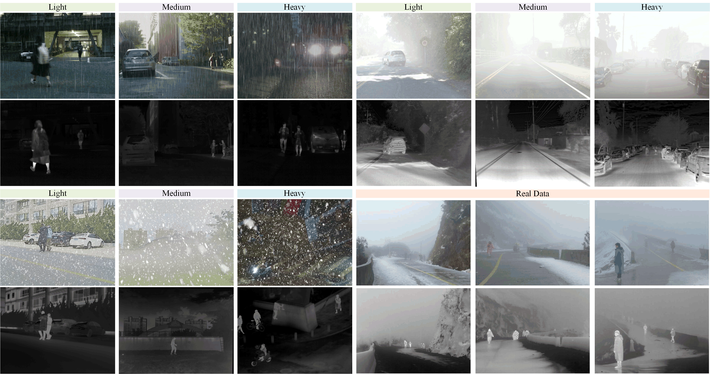
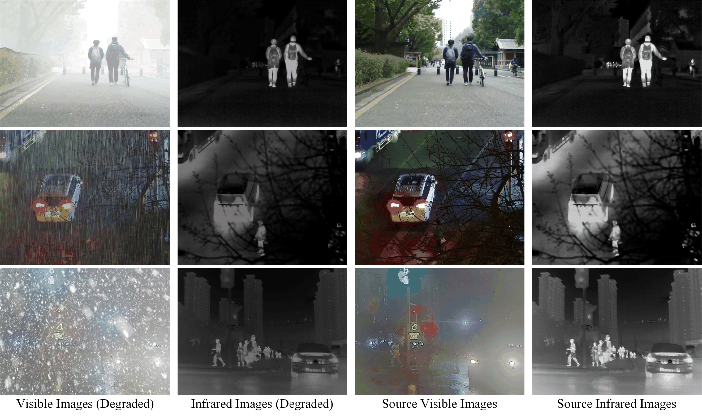
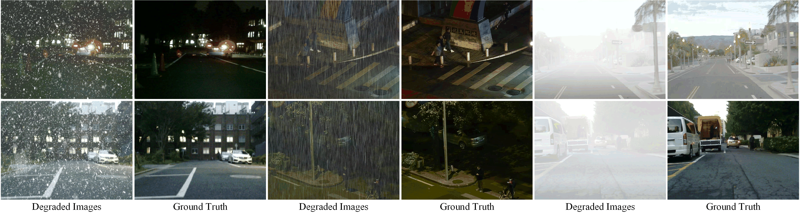
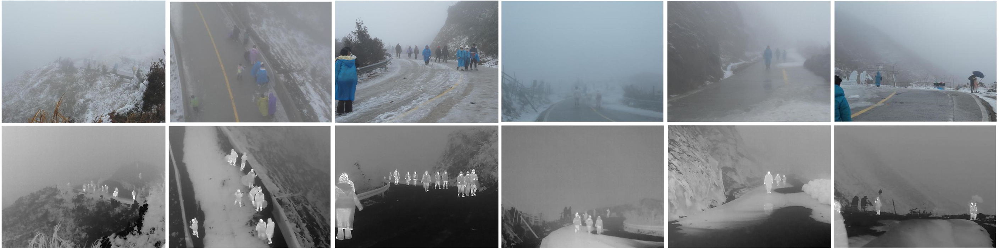
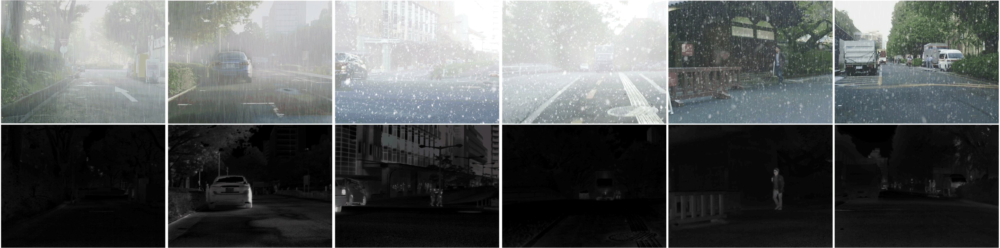

Abstract
The existing MMIF dataset lacks comprehensive coverage of adverse weather scenarios. To address this, we introduce AWMM-100k, a benchmark dataset constructed by selecting samples from RoadScene, MSRS, M3FD, and LLVIP, followed by controlled degradation processing to simulate adverse weather conditions. Combined with real-world data captured using a DJI M30T drone equipped with high-resolution visible and thermal cameras, AWMM-100k comprises over 187,699 images covering rain, haze, and snow, each categorized into heavy, medium, and light intensities. This dataset supports research on multi-modality image fusion under challenging weather conditions and is also applicable to image restoration tasks such as dehazing, deraining, and desnowing. We thank the original dataset for its contribution. In addition, we believe this dataset significantly expands the scope of multimodal image processing and computer vision research, facilitating advancements in both image fusion and restoration tasks under adverse conditions.
Dataset Overview

Image Fusion

Image Restoration

Real Scene

Compound Degradation
